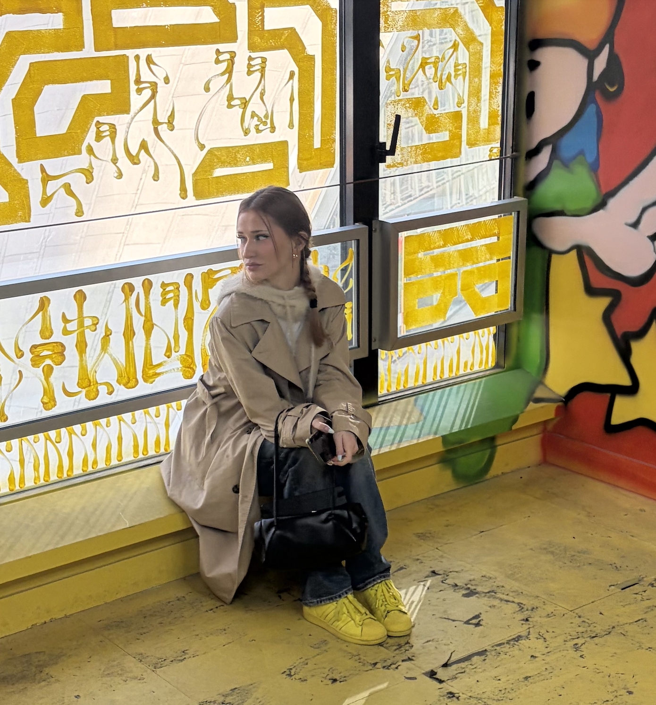

agathe rougette
( qui s'est ????? )Basée à Paris, je suis étudiante en communication visuelle et direction artistique à la Paris School of Luxury. Passionnée par l'image, l'identité visuelle et la création de contenus engageants, j'accompagne des marques, des projets culturels et des maisons de mode dans la construction de leur univers visuel.
J'aime par-dessus tout les choses colorées, peps et fun, et je puise mon inspiration dans le pop art : ses aplats vifs, son énergie et son sens du mélange entre culture populaire et création. J'allie cette audace graphique à une forte sensibilité photographique et à une vision stratégique de la communication. De la direction de shootings à la conception de supports print et digitaux, je crée des récits cohérents et pleins de peps qui révèlent l'essence de chaque projet.
Mon parcours me l'a déjà permis de le faire sur le terrain. Chez Studio MVO (mode et musique), j'ai créé des contenus pour les réseaux sociaux, géré des plannings et des séances photo, trié les fichiers et assuré le montage et la retouche de contenus filmés de défilés. J'ai aussi fait mes armes à la Parfumerie Sesame et dans un atelier d'architecture d'intérieur, ce qui m'a appris à m'adapter vite, à travailler en équipe et à soigner chaque détail, du plateau de shooting jusqu'au rendu final.
Je travaille avec Photoshop, InDesign, Illustrator, Lightroom, CapCut et Canva, et je parle français, anglais et espagnol.
